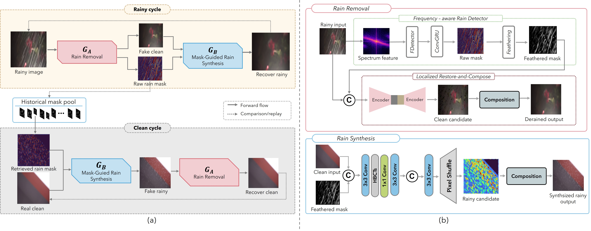

Abstract
Unpaired single-image deraining removes the need for aligned rainy–clean pairs, yet existing translation-based methods remain severely under-constrained: the generator is free to re-synthesize the entire image, even though rain typically corrupts only part of the scene. This unnecessary freedom often alters reliable background content. We propose DRC-Derain, a Detect-Restore-Compose framework that reformulates unpaired deraining as localized image editing. A frequency-aware detector first estimates rain-affected regions by fusing weak photometric cues, learnable spectral features, and spatial context. A restoration network then predicts content only within these regions, while rain-free pixels are copied directly from the input via mask-guided composition. To learn this decomposition without paired supervision, we introduce three complementary mechanisms: a mask-guided reverse mapping that confines rain synthesis to the given region and turns cycle reconstruction into an additional localization signal; replay of historical masks on unrelated clean images to synthesize controlled rainy samples with known rain support; and adaptive weak-mask supervision, which weighs the imperfect photometric prior by degradation-aware restoration quality rather than treating it as fixed pseudo-ground truth. Experiments on synthetic and real-world benchmarks show that DRC-Derain achieves competitive deraining performance while better preserving rain-free content and improving robustness under unpaired training.
System Architecture

We address single-image deraining under an unpaired setting: during training, a rainy image and a clean image are sampled independently, with no pixel-aligned pairs, rain-layer annotations, or ground-truth rain masks required. At inference time, only a rainy image is given.
A direct unpaired mapping is inherently under-constrained, since rain occupies only a sparse portion of the image while an unconstrained generator can modify the entire scene - risking removal of fine background structures, altered illumination, or superficial appearance changes instead of genuine rain removal. Standard cycle consistency does not fully resolve this, since the reverse generator can infer where rain was removed from the translated image itself, which may encourage the forward mapping to preserve weak rain traces as an implicit reconstruction cue.
We address this by explicitly modeling the spatial support of rain, formulating unpaired deraining as a localized detect-restore-compose transformation coupled with a mask-conditioned reverse mapping. This yields our Detect-Restore-Compose framework (DRC-Derain), consisting of a rain-removal generator GA, a rain-synthesis generator GB, and two domain discriminators DA (clean-domain realism) and DB (rainy-domain realism).
Given a rainy image x, the forward generator produces both a derained image and a raw rain mask, (x̂, a) = GA(x). Rather than reconstructing the entire image, GA modifies the input only within the soft support derived from mask a, preserving reliable rain-free pixels by construction. The same mask is reused by the reverse generator to form a rainy cycle, x̄ = GB(x̂, a): since GB is restricted to synthesizing rain inside the supplied support, reconstructing the original rainy image requires the mask to cover the rain that was removed, turning the cycle into an additional localization signal rather than mere invertibility.
A complementary clean cycle starts from an unrelated clean image y: a raw rain mask is sampled from a replay pool of historical masks predicted from real rainy images, used by GB to synthesize a rainy version of y, which GA then processes and is expected to recover as the original clean content. The two occurrences of GA (and of GB) share parameters, while GA and GB remain distinct networks, as do DA and DB. At inference, the reverse generator and both discriminators are discarded, leaving only GA is required for end-to-end deraining.
Result Demonstration
One scene, four images. Hover anywhere over any tile and all four magnify the same point at once, so you can pick a streak in the input and follow what each method did to it, side by side against the ground truth. The sample below shows the magnifier working; the results are underneath it.


About the SOTA baseline (CSUD). CSUD, short for Channel Consistency Prior and Self-Reconstruction Strategy Based Unsupervised Image Deraining (CVPR 2025), removes rain without paired rainy/clean training data. It adds a Channel Consistency Loss built on a Channel Consistency Prior of rain streaks so the pseudo-rainy images it generates for training stay realistic while preserving background detail, and a Self-Reconstruction strategy that curbs redundant information transfer in the generator. It reports state-of-the-art results among unsupervised deraining methods with strong generalization, making it the baseline our method is compared against above.
Ours Results
The slider below runs on its own to show what the control does. The six scenes under it behave identically, but are yours to drive: drag a handle, click anywhere on an image, or use the arrow keys. Fully left = our derained output; fully right = the rainy input. Hover any of them for a 2× magnifier over the residual streaks.


Comparison
Qualitative comparison on representative real-world rain scenes from the RealRain-1k-L test set. Each column is the same input processed by one method.


BibTeX
Update with journal, volume, pages and DOI after publication.
@misc{anonymous2026drcderain,
title = {DRC-Derain: Detect-Restore-Compose Framework for Unpaired Single-Image Deraining},
author = {Anonymous},
year = {2026},
note = {Manuscript under review}
}Contact
Contact information withheld for double-blind review.